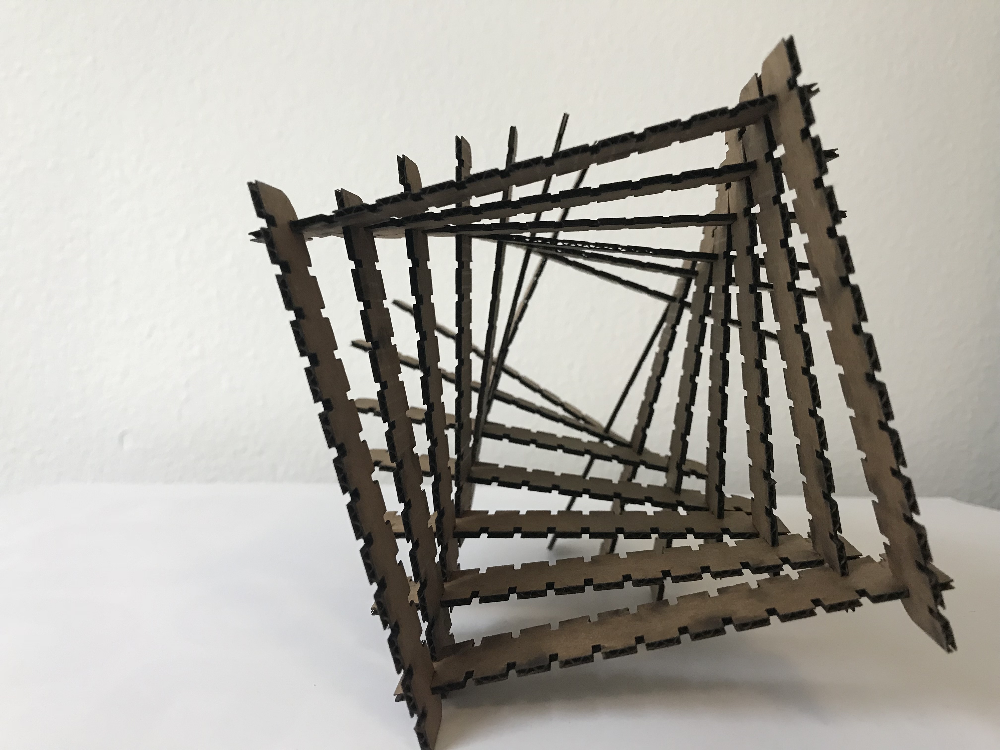

Bella's A2: CAD model + fabricated output!
Process
- Step 1: Understanding Material Variables
- Step 2: Rhino + Grasshopper
- Step 3: Laser Cut
Before starting, I had to understand how having two different types of thickness ( 0.133" & 0.120" ) would affect my previous design and insertion slots.
I used Rhino and Grasshopper to draw in 'scale' and converted the file to .ai and opened in Illustration to change the line weight and color.
I laser cutted a few pieces to made sure it fit together. Fortuntely, I had already taken into consideration the material thickness in step 1 and did not have to make any adjustments.
Source File
Rhino file Grasshopper file Illustrator fileMachine Settings: Material Soft Wood, Thickness: 0.133", 0.120" Speed: 25% Power: 100%
Kit Design and Execution
- Design Description: I used the same design idea as last week and made some adjustments (pattern, length, and insert slot adjustment) 
- Execution: I used Rhino and Grasshopper to make multiple rectangles and moved them around. I used the array function to complete the design and baked it. It was difficult understanding how to reduce redundancy in Grasshopper.

Peer-Teacher Attribution
Thanks @Nadya for the Grasshopper Video. That was super helpful!